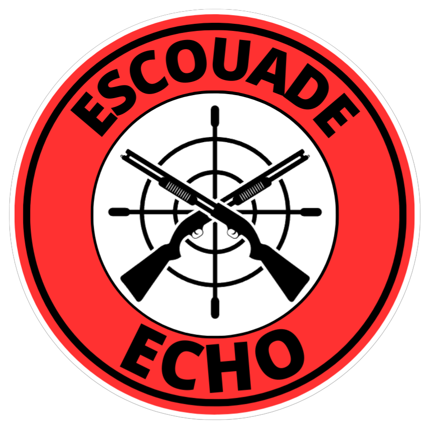

I founded and was the president of the airsoft sports association ESCOUADE ECHO. As president, I took part in the association's activities, including field research and organizing weekly games. This experience helped me meet many people and understand the responsibilities of managing an association.

I participated in the IngéPLUS program, which supports BTS students from the Occitanie region who have the potential and desire to continue their studies, potentially up to an engineering school. As a mentor, I interacted with a small group of 4-5 BTS students monthly through video calls, emails, and discussion groups on Whatsapp. During these exchanges, I shared my educational journey, daily life in engineering school, student life, and provided assistance in subjects like Math, French, and English. My role was to encourage, support, and offer advice to help them in their academic path.